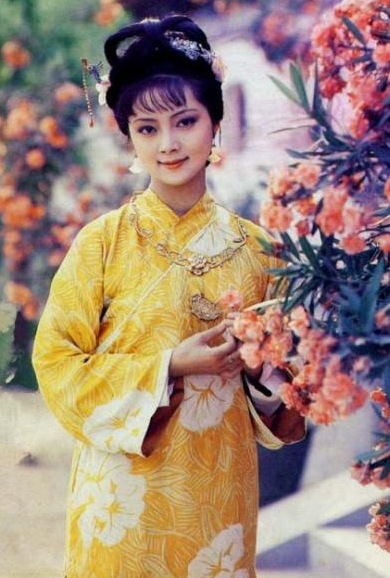
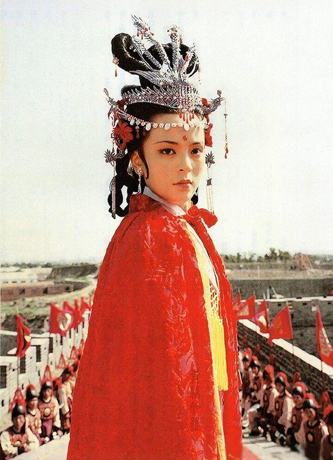
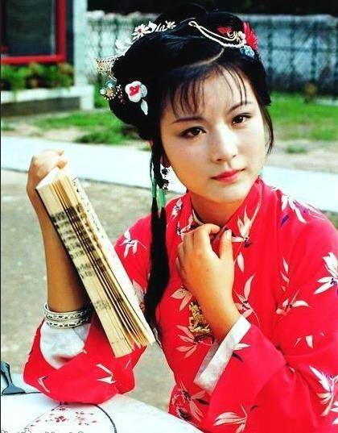
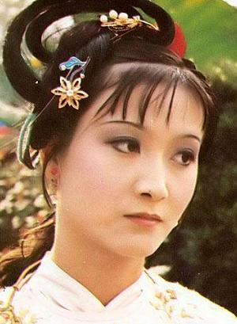
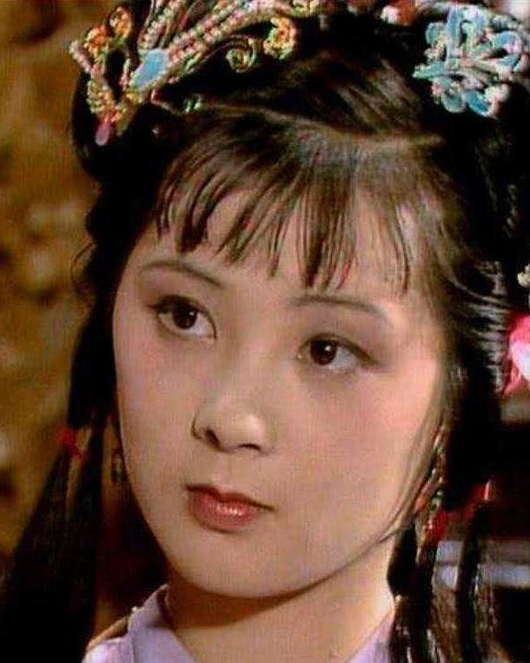
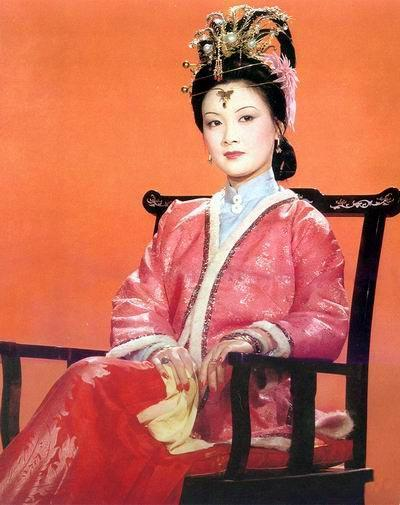
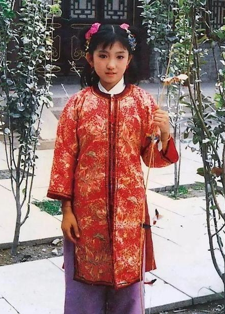
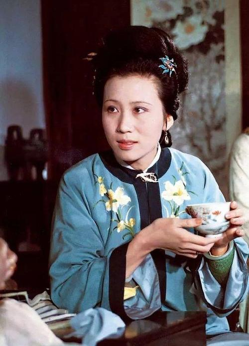
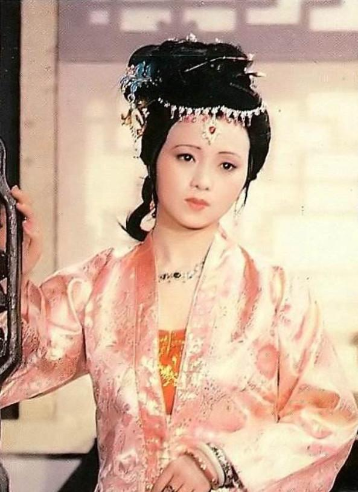

入世与出世
简介：
林黛玉才华横溢，极有灵气，口齿伶俐，面冷心善，不通世务。因母亲贾敏早亡，贾母同情林黛玉没有母亲，接到贾府抚养教育。后来又死了父亲，从此常住贾府。贾元春省亲后，林黛玉入住潇湘馆，在大观园诗社里别号潇湘妃子，作诗直抒性灵。林黛玉与贾宝玉青梅竹马，二人思想一致，互为知己，无奈抵不过功利之人，黛玉最后泪尽而逝。贾宝玉空对山中高士晶莹雪（薛宝钗），终不忘世外仙株寂寞林（林黛玉）。
判词：
可叹停机德（薛宝钗），堪怜咏絮才（林黛玉）。玉带林中挂（林黛玉），金簪雪里埋（薛宝钗）。
注：钗黛判词合一

简介：
宝钗容貌丰美，举止娴雅，博学多才，热衷仕途，聪明睿智，心思缜密，通达了悟。她善于处理人际关系，在贾府中受到一致好评。她父亲早亡，有母亲（薛姨妈）和一兄（薛蟠）。由于僧道二仙的点化，她挂有一把錾有“不离不弃，芳龄永继”的金锁，与贾宝玉随身所载之玉上所刻之“莫失莫忘，仙寿恒昌”恰好是一对，寓意金玉良缘。贾宝玉与薛宝钗奉家族之命成婚，但看破红尘，心灰意冷的宝玉却最终选择了出家。
判词：
可叹停机德（薛宝钗），堪怜咏絮才（林黛玉）。玉带林中挂（林黛玉），金簪雪里埋（薛宝钗）。
注：钗黛合一
皇妃与王妃
简介：
贾政与王夫人之长女。自幼由贾母教养。作为长姐，她在宝玉三四岁时，就已教他读书识字，虽为姐弟，有如母子。后因贤孝才德，选入宫作女吏。不久，封凤藻宫尚书，加封贤德妃。贾家为迎接她来省亲，特盖了一座富丽堂皇的省亲别墅，谓之“大观园”。元妃虽给贾家带来了“烈火烹油，鲜花著锦”之盛，但她却被幽闭在皇家深宫内。省亲时，她说一句，哭一句，把皇宫大内说成是“终无意趣”的“不得见人的去处”。这次省亲之后，元妃最后病死宫中。
判词：
二十年来辨是非，榴花开处照宫闱。三春争及初春景，虎兕相逢大梦归。

简介：
贾政与妾赵姨娘所生，排行为贾府三小姐。她精明能干，有心机，能决断，连王夫人与凤姐都让她几分，有“玫瑰花”之诨名。探春的诗号为“蕉下客”。她的等级观念特别强烈，所以对处于婢妾地位的生母赵姨娘轻蔑厌恶。抄检大观园时，她为了维护自己的尊严，“令丫环秉烛开门而待”，只许别人搜自己的箱柜，不许人动一下她丫头的东西。“心内没有成算的”王善保家的，不懂得这一点，对探春动手动脚的，所以当场挨了一巴掌。探春对贾府面临的大厦将倾的危局颇有感触，她想用“兴利除弊”的改革来挽救，在宝钗的帮助下颇有成就。随后远嫁他乡。
判词：
才自精明志自高，生于末世运偏消。清明涕泣江边望，千里东风一梦遥。
开朗与孤僻

简介：
是贾母的侄孙女。虽为豪门千金，但她从小父母双亡，由叔父史鼎抚养，而婶婶对她并不好。在叔叔家，她一点儿也作不得主，且不时要做针线活至三更。她的身世与林黛玉有些相似，但她心直口快，开朗豪爽，爱淘气，甚至敢于喝醉酒后在园子里的大青石上睡大觉。她和宝玉也算是好朋友，在一起时，有时亲热，有时也会恼火，但她襟怀坦荡，从未把儿女私情略萦心上。后嫁与卫若兰，婚后不久，丈夫家被抄，自己被迫逃难，流浪乞讨，由于受到宝钗乐观精神的影响，很快从失去丈夫的悲伤中解脱了出来（寒塘渡鹤影）。
判词：
富贵又何为？襁褓之间父母违。展眼吊斜晖，湘江水逝楚云飞。

简介：
苏州人氏。她祖上是读书仕宦人家。因自幼多病，买了许多替身〈旧时迷信认为命中有灾难的人应该舍身出家做僧、道，有钱人家买穷人家子女代替出家，叫替身〉，皆不中用。只得入了空门，身体才好，故一直带发修行。她极通文墨，谙熟经典，模样又好。十七岁时随师父到长安修行，师父圆寂后，被贾家请入栊翠庵。她自视清高，刘姥姥喝过的茶杯，她嫌脏，不要了，而给宝玉喝的茶杯却是自己日常用的绿玉斗。宝玉生日，她特地派人送去“槛外人妙玉恭肃遥叩芳辰”的字帖。后来妙玉不幸被强盗掳去，结局实在可怜。
判词：
欲洁何曾洁？云空未必空。可怜金玉质，终陷淖泥中。
懦弱与无情

简介：
贾赦与妾所生的，排行为贾府二小姐。她老实无能，懦弱怕事，有“二木头”的诨名。她不但作诗猜谜不如姐妹们，在为人处世上，也只知退让，任人欺侮。她的攒珠垒丝金凤首饰被下人拿去赌钱，她不追究，别人设法要替她追回，她却说∶“宁可没有了，又何必生气。”她父亲贾赦欠了孙家五千两银子还不出，就把她嫁给孙家，实际上是拿她抵债。出嫁后才一年，她就被孙绍祖虐待而死（一载赴黄粱）。
判词：
子系中山狼，得志便猖狂。金闺花柳质，一载赴黄粱。

简介：
因母亲早逝，她一直在荣国府贾母身边长大。由于没有父母怜爱，养成了孤僻冷漠的性格，心冷嘴冷。抄检大观园时，她咬定牙，撵走毫无过错的丫环入画，对别人的流泪哀伤无动于衷。四大家族的没落命运，三个本家姐姐的不幸结局，使她产生了弃世遁隐的念头，不顾家人的反对出家为尼。
判词：
勘破三春景不长，缁衣顿改昔年妆。可怜绣户侯门女，独卧青灯古佛旁。
狠辣与余庆

简介：
贾琏之妻，王夫人的内侄女。长着一双丹凤三角眼，两弯柳叶吊梢眉，身量苗条，体格风骚。她精明强干，深得贾母和王夫人的信任，成为贾府的实际大管家。她高踞在统领贾府几百口人的管家宝座上，口才与威势是她谄上欺下的武器，攫取权力与窃积财富是她的目的。她极尽权术机变，残忍阴毒之能事，虽然贾瑞这种纨绔子弟死有余辜，但“毒设相思局”也可见其报复的残酷。
判词：
凡鸟偏从末世来，都知爱慕此生才。一从二令三人木，哭向金陵事更哀。

简介：
贾琏与王熙凤的女儿。巧姐由于年纪幼小，在书中出场不多。她生日七月初七，王熙凤觉得日子不好，所以怕自己起了名字犯冲，让刘姥姥代为起名。刘姥姥给她取名“巧姐”，寓意“逢凶化巧，化险为夷”。巧姐的结局，也应了这个字。巧姐从小生活优裕，是豪门千金。但在贾府败落、王熙凤死后，王仁受贾蓉（狠舅奸兄）的指使把她卖与妓院，在紧急关头，幸亏刘姥姥等人帮忙，把她赎救出，后嫁给王板儿。
判词：
势败休云贵，家亡莫论亲；偶因济刘氏，巧得遇恩人。
贞洁与风流

简介：
字宫裁，贾珠之妻，生有儿子贾兰。她出身金陵名宦，父亲李守中曾为国子祭酒。她从小就受父亲“女子无才便是德”的教育，以认得几个字，记得前朝几个贤女便了，每日以纺织女红为要。贾珠不到二十岁就病死了。李纨就一直守寡，虽处于膏粱锦绣之中，竟如“槁木死灰”一般，一概不闻不问，只知道抚养亲子，闲时陪侍小姑等女红、诵读而已。但她进入大观园后，恢复了青春朝气，不但带领诗社兴旺发达，而且把大观园治理成青春女儿的净土和乐园。
判词：
桃李春风结子完，到头谁似一盆兰。如冰水好空相妒，枉与他人作笑谈。

简介：
贾蓉之妻。她是营缮司郎中秦邦业从养生堂抱养的女儿，小名可卿，大名兼美。她长得袅娜纤巧，性格风流，行事又温柔和平，深得贾母等人的欢心。但她与公公贾珍关系暧昧，与他们偷情被暴露后，由于她羞愧不堪而在天香楼上吊自杀。她鲜艳妩媚有似宝钗，风流袅娜，则又如黛玉。原是个钟情的首坐，在警幻仙子座下管的是风情月债。在贾宝玉梦游太虚幻境时，被警幻仙子许配给贾宝玉教他云雨之情。离世前魂托凤姐，告其“月满则亏，水满则溢”和“登高必跌重”的道理以警示贾府兴亡。
判词：
情天情海幻情深，情既相逢必主淫。漫言不肖皆荣出，造衅开端实在宁。